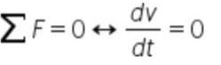
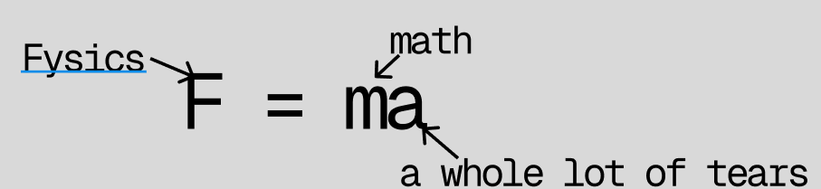

Me las aprendi con canciones y se que explican las causas del movimiento, porque son el fundamento de la dinámica
Primera Ley, Ley de la inercia
Segunda ley de Newton
aprendimos a hacer la sumatoria de fuerzas,aprendi que el peso va para abajo y es el producto de la masa por la gravedad, tambien que la fuerza normal es su opuesta y solo esta presente cuando el cuerpo esta sobre una superficie, sino es tensión.
Tercera ley de Newton

Aprendi que todo acto tiene sus consecuencias